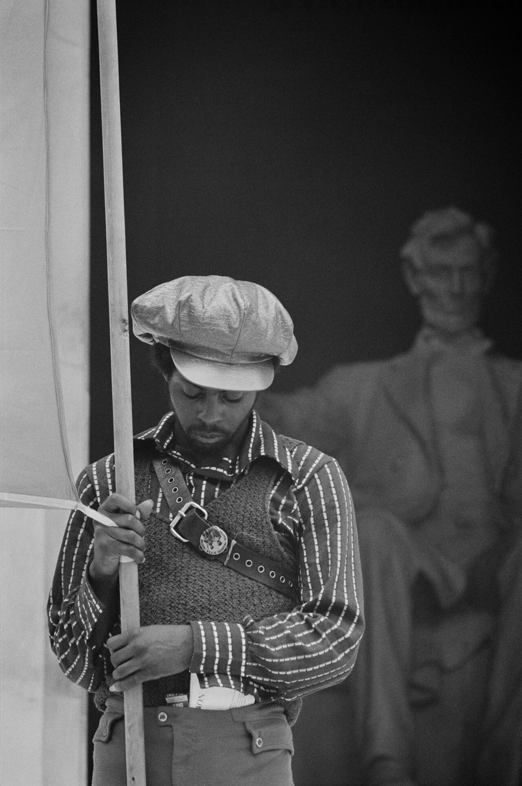

Whoever holds the pen holds the frame. So they took the pen.
Debate this · in your pods
"You should never tell a story that isn't yours to tell."
Pick a side and defend it to your pod. Two minutes, then we fight it out as a room. No fence-sitting.
Goal of today
What you'll walk out with
Today you'll wrestle with two ideas that change how you read any coverage of any group: self-representation and whoever holds the pen holds the frame. We'll trace how one movement built its own newspaper and turned even the act of selling it on a corner into organizing. Then you'll ask the hard one about your own cause: who's holding your pen right now? You'll go deeper Thursday. Today we dig in together.
Feel it
A group in a poor neighborhood starts feeding hot breakfast to schoolkids. Free. Every weekday before class.
Write two headlines for the exact same program: one from a TV station suspicious of the group, one from the group's own newspaper.
The reveal
This is the Black Panther Party. The Free Breakfast for Children Program, 1969. They fed tens of thousands of kids across the country, and it worked so well that public-school breakfast programs later copied the model. The FBI's director called that breakfast program the single greatest threat to their effort to destroy the Party.
Eggs for six-year-olds, ranked a national threat.
Mainstream news mostly showed the Panthers as armed criminals. Whoever told the story decided which of those two things the country saw.
Name it
Self-representation
A community authoring its own image, in a medium it controls, instead of being described by outsiders.
The Black Panther
The Party's newspaper, started 1967 in Oakland. At its peak, more than 300,000 copies a week, the most-read Black paper in the country.
Whoever holds the pen holds the frame. When the papers and stations that reach millions call you a criminal, you can ask them to be fairer, or you can build a channel you control and describe yourself. The Panthers built the channel.

A Black Panther Party member with a banner, Washington, D.C., 1970 (Library of Congress, public domain).
The choice
They could have kept demanding fairer coverage from the stations that reached millions. Instead they printed their own paper.
Why build a whole newspaper instead of firing rebuttals at the TV station?
Here's the idea
A rebuttal still lives inside someone else's frame. You're reacting to their story, on their platform, on their schedule, and the correction never travels as far as the accusation did. Owning the medium flips that. You set the subject, the words, and the pictures, and you decide what the country never gets to call you in the first place. That's the move from being described to describing yourself.
Emory Douglas, the Party's Minister of Culture and the paper's artist. Thick black outlines. The community drawn large and dignified. Power drawn as the pig. Cheap to print, plain enough that a child could read it.
Shown live in class from the archive.
The mirror
What does it do to a community to open its own paper every week and see people who look like them drawn as heroes instead of suspects?
Here's the idea
Douglas understood a picture as a mirror. Advertising showed people a life they couldn't afford. The news showed them people who looked like them in handcuffs. A community that keeps seeing itself as the villain starts to believe it, and a community that sees itself as the hero can begin to act like one. "Art has relevancy," he said. "It's a language, that's the power of it."
The corner
The paper wasn't mailed or posted. Members sold it by hand on the corner for 25¢, and the seller kept about half.
How is selling a paper on a corner, every day, different from a post going viral?
Distribution was the organizing
Sold on the corner for 25¢. The seller kept about half.
Income for members with no other job.
A reason to stand on the corner, visible, every single day. Presence.
Every sale is a face-to-face conversation. Recruitment.
The paper's money funded the free breakfast and the clinics.
Handing you the paper was the relationship.
A viral post reaches more people and leaves none of that behind. No corner, no conversation, no one you'd know tomorrow.
Hold the whole of it
The paper was community journalism and open persuasion, advocacy, not neutral news. The Party said so plainly.
Drawing police as pigs dehumanized a group on purpose. That's a rhetorical weapon. Name it as one, even when you understand why they reached for it.
The Party carried real internal contradictions, including sexism. Some surfaced in the paper. Much did not.
COINTELPRO, a secret FBI program, actively worked to destroy the Party and the paper: raids, forged letters, worse. The threat was real and documented.
They seized the power to frame their own story instead of leaving it to people who wished them harm.
So the question for your cause: who's holding your pen?
Workshop · in your pods
Design one front page that tells a community's story from the inside.
Take a community or cause (your own is fine) and pick a format you could actually make, a one-page papera zinea photo seriesa wall murala printed newsletter then fill all four boxes. Pick a spokesperson to report back.
The frame to refuse
What's the outsider headline or image you're up against, the way you'd get shown if you did nothing?
Your headline
Same event, told from inside. What do you name it, and what do you refuse to call it?
Your hero image
Who gets drawn or photographed large and dignified? Name a real person or role, not a logo or a pity shot.
Distribution as organizing
Where and how do you hand it out so the act of distributing it builds real relationships, more than views?
Your cause · Field Notebook
Open your Field Notebook. Ask who's holding your pen.
Work these three on your own, then we'll hear a few.
Right now, who tells your cause's story to the public: you, or someone else (the news, a rival, or no one at all)? Be specific.
Write the worst-but-plausible headline an unsympathetic outsider would run about your cause. Then write your own headline for the same event, from the inside.
Name one channel you could actually own this semester, even a tiny one, so you represent yourselves instead of waiting to be described.
Where we go from here
Who's holding your pen?
Thursday's module: you'll build the theory of self-representation, then work the ethics of telling any story, consent, dignity, and who can actually reach it. Bring your cause.